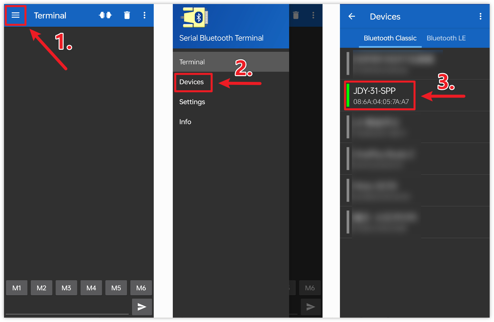

Note
Hello, welcome to the SunFounder Raspberry Pi & Arduino & ESP32 Enthusiasts Community on Facebook! Dive deeper into Raspberry Pi, Arduino, and ESP32 with fellow enthusiasts.
Why Join?
Expert Support: Solve post-sale issues and technical challenges with help from our community and team.
Learn & Share: Exchange tips and tutorials to enhance your skills.
Exclusive Previews: Get early access to new product announcements and sneak peeks.
Special Discounts: Enjoy exclusive discounts on our newest products.
Festive Promotions and Giveaways: Take part in giveaways and holiday promotions.
👉 Ready to explore and create with us? Click [here] and join today!
Bluetooth LCD
The project receives messages through a Bluetooth module connected to the UNO board and displays the received messages on an LCD screen.
1. Build the Circuit

2. Upload the Code
Open the
01-Bluetooth_lcd.inofile under the path ofultimate-sensor-kit\code\iot_project_esp01\bluetooth\01-Bluetooth_lcd, or copy this code into Arduino IDE.Note
To install the library, use the Arduino Library Manager and search for “LiquidCrystal I2C” and install it.
After selecting the correct board and port, click the Upload button.
Open the Serial monitor(set baudrate to 9600) to view debug messages.
3. App and Bluetooth module Connection
We can use an app called “Serial Bluetooth Terminal” to send messages from the Bluetooth module to Arduino.
Install Serial Bluetooth Terminal
Go to Google Play to download and install Serial Bluetooth Terminal .
Connect Bluetooth
Initially, turn on Bluetooth on your smartphone.
Navigate to the Bluetooth settings on your smartphone and look for names like JDY-31-SPP.
After clicking it, agree to the Pair request in the pop-up window. If prompted for a pairing code, please enter “1234”.

Communicate with Bluetooth module
Open the Serial Bluetooth Terminal. Connect to “JDY-31-SPP”.

Send command
Use the Serial Bluetooth Terminal app to send messages to Arduino via Bluetooth. The message sent to Bluetooth will be displayed on the LCD.


4. Code explanation
Note
To install library, use the Arduino Library Manager and search for “LiquidCrystal I2C” and install the library.
Setting up the LCD
#include <LiquidCrystal_I2C.h> LiquidCrystal_I2C lcd(0x27, 16, 2);
This segment of code includes the LiquidCrystal_I2C library and initializes the LCD module with the I2C address as
0x27and specifies that the LCD has16columns and2rows.Setting up Bluetooth communication
#include <SoftwareSerial.h> const int bluetoothTx = 3; const int bluetoothRx = 4; SoftwareSerial bleSerial(bluetoothTx, bluetoothRx);
Here, the SoftwareSerial library is included to allow the JDY-31 Bluetooth module to communicate with the Arduino using pins 3 (TX) and 4 (RX).
Initialization
void setup() { lcd.init(); lcd.clear(); lcd.backlight(); Serial.begin(9600); bleSerial.begin(9600); }
The
setup()function initializes the LCD and clears any existing content. It also turns on the backlight for the LCD. Communication is started with the serial monitor and the Bluetooth module, both at a baud rate of9600.Main Loop
void loop() { String data; if (bleSerial.available()) { data += bleSerial.readString(); data = data.substring(0, data.length() - 2); Serial.print(data); lcd.clear(); lcd.setCursor(0, 0); lcd.print(data); } if (Serial.available()) { bleSerial.write(Serial.read()); } }
This is the main operational loop of the Arduino program. It continually checks for incoming data from both the Bluetooth module and the serial monitor. When data is received from the Bluetooth device, it’s processed, displayed on the serial monitor, and shown on the LCD. If data is entered into the serial monitor, this data is sent to the Bluetooth module.